# install.packages("pak")
pak::pak("tscnlab/dlmoR")dlmoR estimates dim-light melatonin onset (DLMO) from time series of melatonin concentrations using the hockey-stick method. The main function is calculate_dlmo(), which labels the profile, defines the fitting region, runs a grid search, and returns DLMO estimates together with diagnostic plots.
This vignette will guide you in not only obtaining a DLMO timestamp, but in understanding how the analysis settings affect the labelled profile, the selected rise, and the diagnostic plots.
Installation
Install the development version of the dlmoR package from GitHub:
Then load the package:
Example profiles
calculate_dlmo() expects a data frame, tibble, or CSV file with two columns:
-
datetime: sampling time asPOSIXct, or a value that can be converted toPOSIXct -
melatonin: numeric melatonin concentration, in pg/mL
This vignette uses example profiles included with the package.
Plot a raw profile
Before fitting a model, inspect the raw melatonin time series. A raw plot gives you a first look at the shape of the profile before fitting the hockey-stick model, including possible threshold crossings, isolated high points, or multiple rises.
profile_a <- system.file(
"extdata/vignette_profiles/melatonin_profile_a.csv",
package = "dlmoR"
)
plot_raw_profile(file_path = profile_a)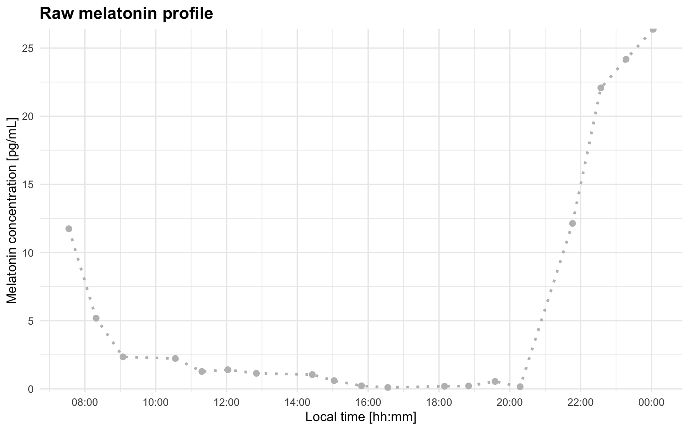
Adding a threshold line can make the first visual check more informative:
plot_raw_profile(file_path = profile_a, threshold = 5)
You can also read the data yourself and use plot_profile(..., mode = "raw"):
melatonin_profile <- readr::read_delim(profile_a, delim = ";", show_col_types = FALSE)
plot_profile(melatonin_profile, threshold = 5, mode = "raw")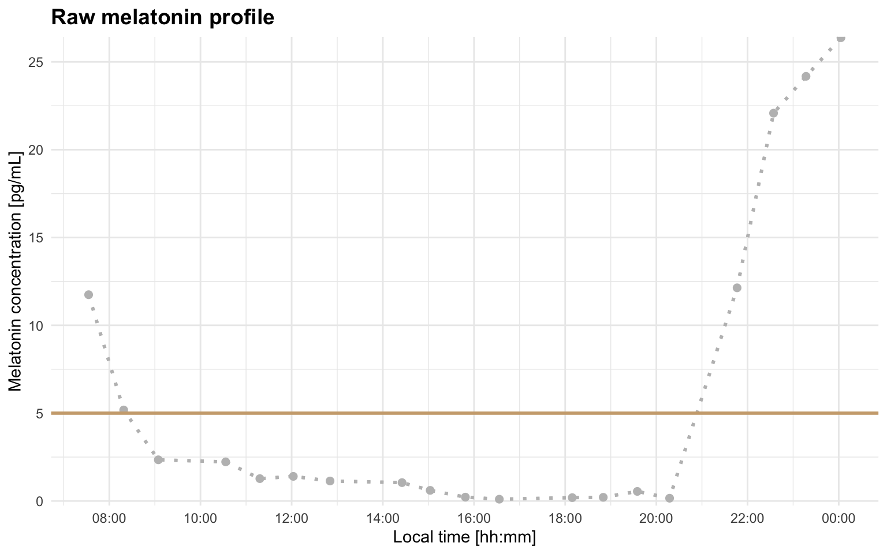
Basic DLMO estimate
For exploratory work, it is often useful to start with the coarse grid search only. This is faster and lets you check whether the profile segmentation and region of interest look sensible.
dlmo_coarse <- calculate_dlmo(
file_path = profile_a,
threshold = 5,
fine_flag = FALSE
)The coarse result is returned in dlmo_coarse$dlmo$coarse. This includes the estimated DLMO time, the fitted melatonin concentration at that time, and the parameters for the fitted hockey-stick lines:
dlmo_coarse$dlmo$coarse
#> $time
#> 20:50:11
#>
#> $fit_melatonin
#> [1] 0.1
#>
#> $fit_lines
#> $fit_lines$base
#> $fit_lines$base$type
#> [1] "linear"
#>
#> $fit_lines$base$m
#> [1] -0.1477986
#>
#> $fit_lines$base$b
#> [1] 3.179588
#>
#>
#> $fit_lines$ascending
#> $fit_lines$ascending$type
#> [1] "linear"
#>
#> $fit_lines$ascending$m
#> [1] 12.72117
#>
#> $fit_lines$ascending$b
#> [1] -264.9632The threshold and interval limit used for the calculation are also stored in the result object:
dlmo_coarse$threshold
#> [1] 5
dlmo_coarse$interval_limit
#> [1] "2H 0M 0S"The labelled melatonin profile is stored in prof. These labels are the bridge between the raw measurements and the fit shown in the diagnostic plot:
dlmo_coarse$prof
#> # A tibble: 19 × 6
#> datetime melatonin time slope base ascending
#> <dttm> <dbl> <time> <dbl> <dbl> <dbl>
#> 1 2024-04-17 07:32:48 11.7 07:32:48 NA 0 0
#> 2 2024-04-17 08:18:57 5.18 08:18:57 -8.53 0 0
#> 3 2024-04-17 09:04:33 2.34 09:04:33 -3.73 1 0
#> 4 2024-04-17 10:33:10 2.23 10:33:10 -0.0792 1 0
#> 5 2024-04-17 11:18:09 1.27 11:18:09 -1.27 1 0
#> 6 2024-04-17 12:02:12 1.40 12:02:12 0.176 1 0
#> 7 2024-04-17 12:50:32 1.14 12:50:32 -0.326 1 0
#> 8 2024-04-17 14:25:17 1.04 14:25:17 -0.0589 1 0
#> 9 2024-04-17 15:02:18 0.605 15:02:18 -0.713 1 0
#> 10 2024-04-17 15:48:38 0.219 15:48:38 -0.500 1 0
#> 11 2024-04-17 16:33:18 0.1 16:33:18 -0.160 1 0
#> 12 2024-04-17 18:09:18 0.19 18:09:18 0.0563 1 0
#> 13 2024-04-17 18:50:06 0.209 18:50:06 0.0279 1 0
#> 14 2024-04-17 19:34:57 0.545 19:34:57 0.449 1 0
#> 15 2024-04-17 20:17:25 0.157 20:17:25 -0.548 1 0
#> 16 2024-04-17 21:46:15 12.1 21:46:15 8.09 0 1
#> 17 2024-04-17 22:34:14 22.1 22:34:14 12.4 0 1
#> 18 2024-04-17 23:16:58 24.2 23:16:58 2.94 0 0
#> 19 2024-04-18 00:02:56 26.4 00:02:56 2.87 0 0The most important segment labels are:
-
base: baseline points used for the early part of the hockey-stick fit -
ascending: points used for the melatonin rise -
intermediate: points between base and ascending segments, when present
The coarse diagnostic plot is stored in dlmoplotcoarse:
dlmo_coarse$dlmoplotcoarse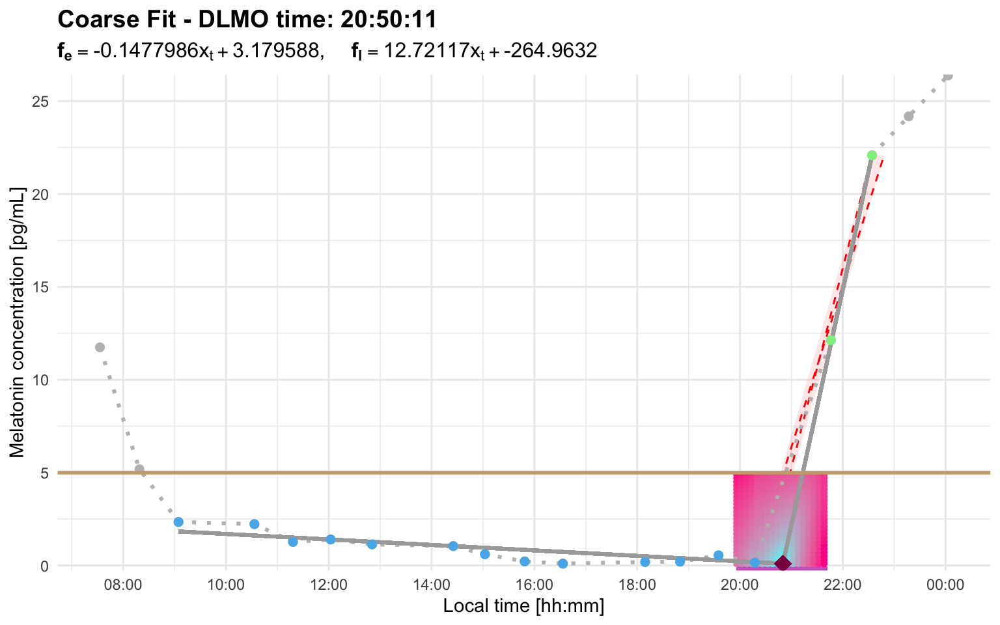
Look for three things:
- the base segment should represent the relatively stable pre-rise portion of the profile
- the ascending segment should follow the biologically plausible melatonin rise
- the DLMO marker should fall near the transition between baseline and rise, rather than on an isolated noisy point
For a more accurate estimate, run the fine search:
dlmo_result <- calculate_dlmo(
file_path = profile_a,
threshold = 5,
fine_flag = TRUE
)
dlmo_result$dlmo$fine$time
#> 20:20:11
dlmo_result$dlmoplotfine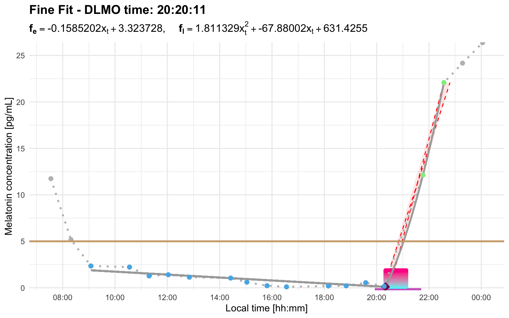
The fine search is more computationally expensive because it refines the grid around the best coarse-grid solutions. For profiles with a wide region of interest, this can take noticeably longer.
Output structure
calculate_dlmo() returns a list with:
-
prof: segmented melatonin profile -
prl: parallelogram diagnostic information -
roi: region of interest for the grid search -
threshold: threshold used for the calculation -
interval_limit: interval-limit setting used for repeated crossing selection -
ip: inflection-point search details -
dlmo: coarse and, if requested, fine DLMO summaries -
dlmoplotcoarse: coarse diagnostic plot -
dlmoplotfine: fine diagnostic plot, iffine_flag = TRUE
Choosing a threshold
The threshold argument sets the melatonin concentration used to define the rise. The appropriate value depends on the assay, study protocol, analysis plan, and the participant’s overall melatonin production; for example, a profile with lower melatonin concentrations may require a lower threshold than a profile with higher concentrations. Changing the threshold can change the base segment, the ascending segment, and whether enough points remain to fit the hockey-stick model.
Profile C illustrates this. At threshold = 2.7, the selected region does not leave enough usable fitting points:
profile_c <- system.file(
"extdata/vignette_profiles/melatonin_profile_c.csv",
package = "dlmoR"
)The raw profile helps explain why. With this threshold, the line sits close to the small early rise, so the selected ascending region can become too cropped to support the hockey-stick fit:
plot_raw_profile(file_path = profile_c, threshold = 2.7)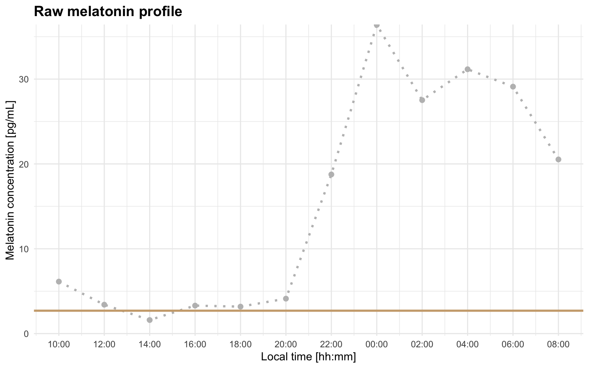
calculate_dlmo(
file_path = profile_c,
threshold = 2.7,
fine_flag = FALSE
)
#> Error: Cannot estimate DLMO because fewer than three points remain in the fitting region after segment selection. This usually means the selected threshold/interval produced too few base, intermediate, or ascending points. Inspect the segmented profile and consider increasing `interval_limit` to include a later sustained rise, or adjusting `threshold` so the selected rise better matches the intended DLMO event.Raising the threshold to 4 better matches the intended rise for this profile:
dlmo_profile_c_threshold_4 <- calculate_dlmo(
file_path = profile_c,
threshold = 4
)
dlmo_profile_c_threshold_4$dlmoplotfine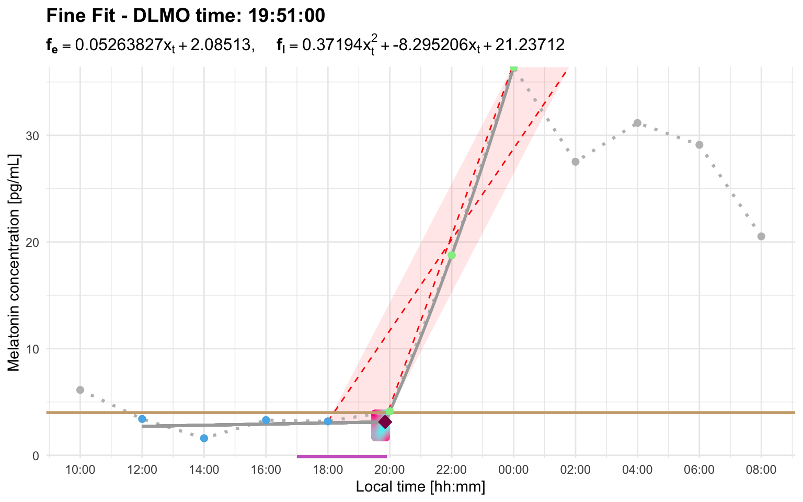
Understanding interval_limit
Some melatonin profiles cross the threshold more than once. The interval_limit argument controls how close repeated candidate rises are handled. It is useful when an early above-threshold excursion is followed by a later, more plausible melatonin rise.
The current repeated-crossing behavior is:
- a single point above threshold that immediately returns below threshold is treated as a blip and ignored automatically
- two or more consecutive points above threshold are treated as a candidate rise
- if another candidate rise starts within
interval_limit, the later rise is taken to represent the melatonin rise - if the later rise starts after
interval_limit, the earlier candidate rise is kept
Numeric values are interpreted as hours, so interval_limit = 2 is equivalent to lubridate::duration(hours = 2). Fractional values are allowed; for example, interval_limit = 0.5 is 30 minutes.
Importantly, interval_limit is measured between the first above-threshold sample of each candidate rise. A below-threshold sample immediately before a large increase may be used later by the hockey-stick fit, but it is not itself a threshold crossing.
Profile B has an early candidate rise and a later stronger rise. With the default 2-hour interval, the later rise starts too far away to replace the early candidate:
profile_b <- system.file(
"extdata/vignette_profiles/melatonin_profile_b.csv",
package = "dlmoR"
)
dlmo_profile_b_default <- calculate_dlmo(
file_path = profile_b,
threshold = 2.7
)
dlmo_profile_b_default$dlmoplotfine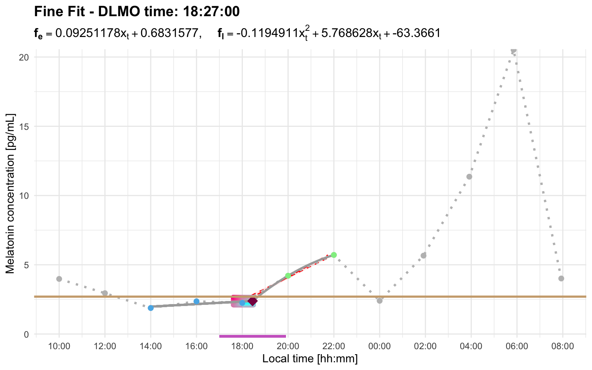
Using a longer interval allows the later sustained rise to replace the early candidate:
dlmo_profile_b_interval <- calculate_dlmo(
file_path = profile_b,
threshold = 2.7,
interval_limit = 8
)
dlmo_profile_b_interval$dlmoplotfine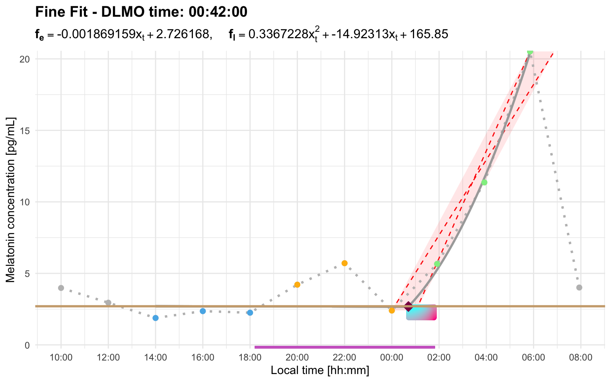
When interval_limit is not needed
Not every repeated threshold crossing requires a wider interval limit. There are two common cases where the default behavior may already be appropriate.
First, if there is only one point above threshold and the profile immediately returns below threshold, dlmoR treats that point as a blip and ignores it automatically.
Profile F shows this behavior. The small single-point excursion is not treated as a candidate rise, so the later sustained rise is selected with the default interval limit:
profile_f <- system.file(
"extdata/vignette_profiles/melatonin_profile_f.csv",
package = "dlmoR"
)
dlmo_profile_f <- calculate_dlmo(
file_path = profile_f,
threshold = 2.7
)
dlmo_profile_f$dlmoplotfine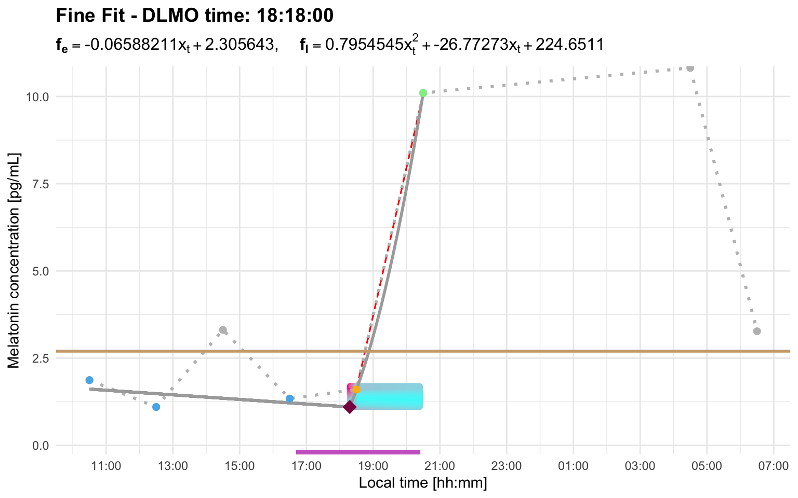
Second, if a later candidate rise starts outside the interval_limit, it does not replace the earlier selected rise. With the default setting, this means that a later threshold crossing more than 2 hours after the earlier candidate is ignored for repeated-crossing selection. In that case, the later crossing is not missed because it is a blip; it is ignored because it is outside the interval window.
Profile I shows the second case. Here, a later threshold crossing occurs after the selected rise, but it starts well outside the default 2-hour interval window. The later crossing is therefore ignored for repeated-crossing selection, and the earlier candidate rise is retained:
profile_i <- system.file(
"extdata/vignette_profiles/melatonin_profile_i.csv",
package = "dlmoR"
)
dlmo_profile_i <- calculate_dlmo(
file_path = profile_i,
threshold = 2.7
)
dlmo_profile_i$dlmoplotfine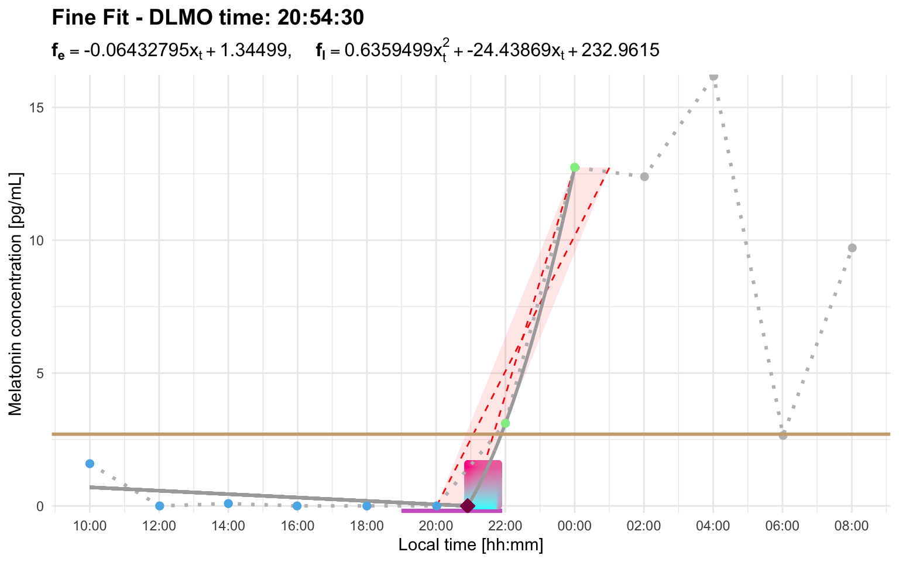
Threshold and interval_limit can interact
Sometimes threshold and interval settings need to be considered together. A threshold may work well for one profile but produce an early candidate rise in another. A wider interval_limit can then be needed to tell the algorithm that a later rise should replace the earlier candidate.
Profile H works with a higher threshold and the default interval:
profile_h <- system.file(
"extdata/vignette_profiles/melatonin_profile_h.csv",
package = "dlmoR"
)
dlmo_profile_h_threshold_5 <- calculate_dlmo(
file_path = profile_h,
threshold = 5
)
dlmo_profile_h_threshold_5$dlmoplotfine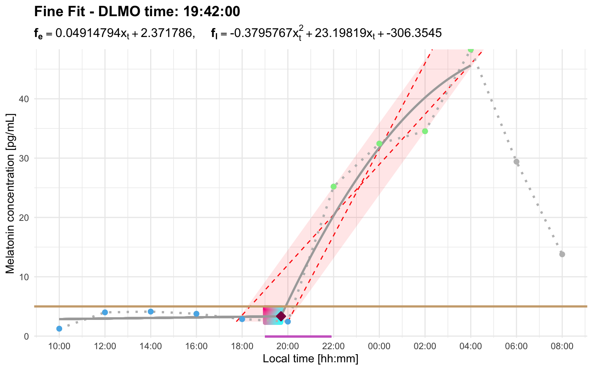
At threshold = 3, the default interval limit is too short for the later rise to replace the earlier candidate:
calculate_dlmo(
file_path = profile_h,
threshold = 3,
fine_flag = FALSE
)
#> Error: Cannot estimate DLMO because fewer than three points remain in the fitting region after segment selection. This usually means the selected threshold/interval produced too few base, intermediate, or ascending points. Inspect the segmented profile and consider increasing `interval_limit` to include a later sustained rise, or adjusting `threshold` so the selected rise better matches the intended DLMO event.In this profile, the early candidate rise starts at the first above-threshold sample around 12:00. The later sustained rise visually begins after the below-threshold point around 20:00, but its first above-threshold sample is around 22:00. Therefore, the interval relevant to interval_limit is about 10 hours, not about 2 hours.
dlmo_profile_h_threshold_3_interval <- calculate_dlmo(
file_path = profile_h,
threshold = 3,
interval_limit = 10
)
dlmo_profile_h_threshold_3_interval$dlmoplotfine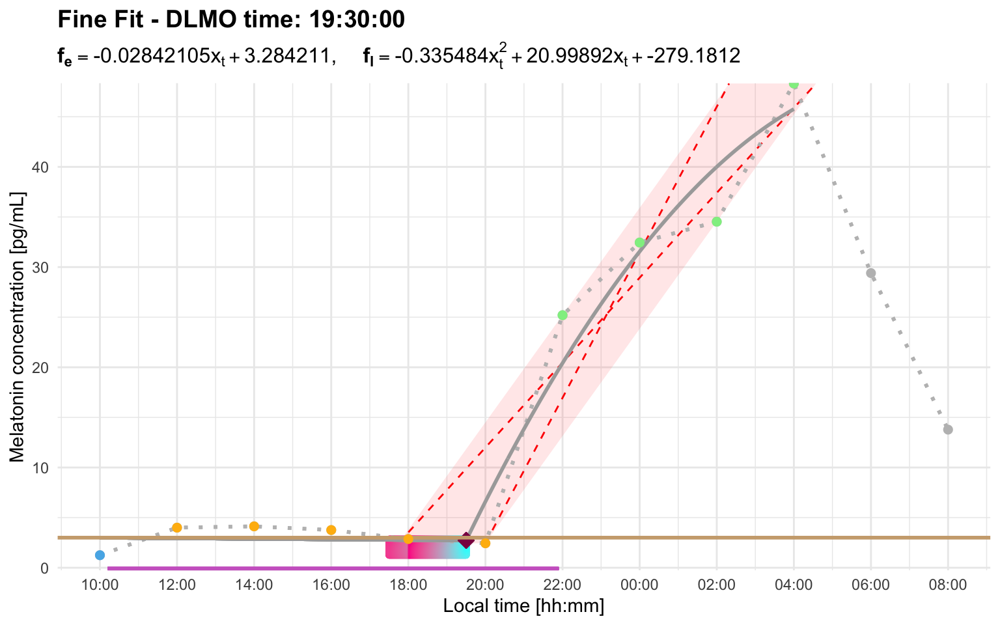
Slow rises and parallelogram truncation
After the ascending region is identified, dlmoR applies truncation rules so that the rise used for the DLMO estimate is rapid and consistent. First, the rightmost part of the ascending region is removed if the final segment has a zero or negative slope.
The parallelogram rule is then applied to slow rises. An optimal parallelogram is fitted around the ascending points and the last point before the ascending region. The slope of the parallelogram’s longest diagonal is compared with the slope of its lateral edge. If the diagonal-to-lateral-edge slope ratio is not greater than 1/2, the last segment of the ascending profile is removed. The parallelogram is then recalculated, and the process is repeated until the rule is satisfied.
Profile G showcases this truncation rule. After the initial rise, melatonin production briefly lulls between roughly midnight and 03:00. That slower, irregular portion is truncated so that the hockey-stick fit is based on the rapid and consistent part of the rise. The plotted parallelogram shows the ascending portion retained for the hockey-stick fit after the rule has been applied:
profile_g <- system.file(
"extdata/vignette_profiles/melatonin_profile_g.csv",
package = "dlmoR"
)
dlmo_profile_g <- calculate_dlmo(
file_path = profile_g,
threshold = 2.7
)
dlmo_profile_g$dlmoplotfine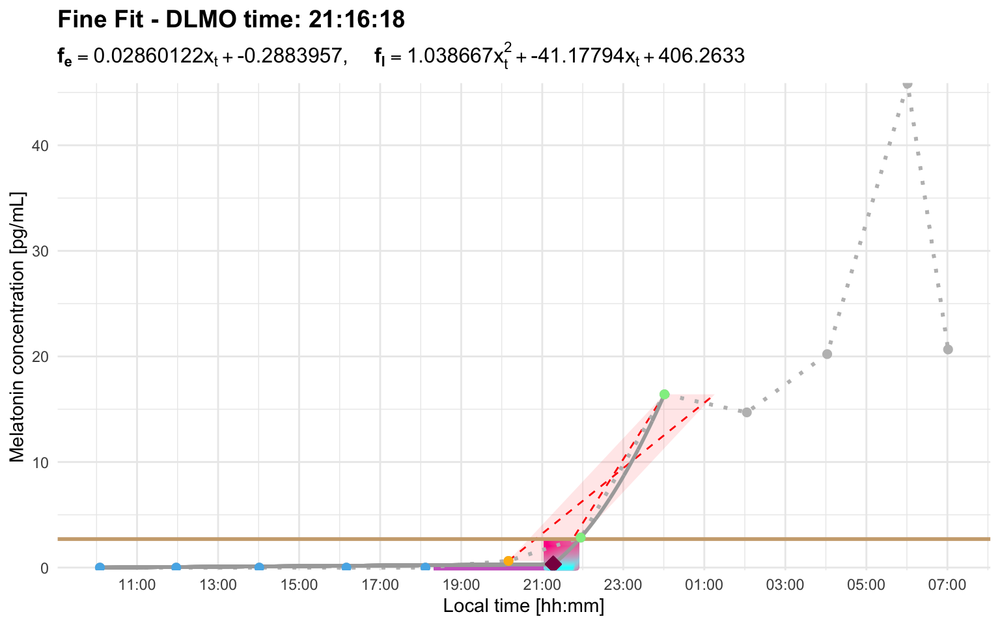
Explore the residual landscape
calculate_dlmo() searches over the region of interest containing possible hockey-stick fits and chooses the solution with the lowest residual error. The residual explorer is an interactive Shiny app for inspecting that search space after a result has been calculated.
run_residual_explorer(dlmo_result)Use the residual explorer when you want to assess how stable or ambiguous a DLMO estimate is. This is especially helpful when a profile has more than one plausible rise, a noisy baseline, sparse sampling, or a broad region of interest. In those cases, the best-fit DLMO may be technically valid but still worth checking against nearby low-residual alternatives.
How to read the explorer
The heatmap shows the residual error across the DLMO search space. The x-axis is candidate DLMO time, the y-axis is candidate melatonin concentration at the DLMO, and the colour scale shows the residual value for each candidate hockey-stick fit. Darker colours indicate lower residuals. The white diamond marks the DLMO selected by calculate_dlmo().
The left-hand controls let you decide how much of the low-residual landscape to summarize. The clustering threshold selects the lowest-residual grid points to display, such as the best 1% or 5% of candidate fits. The minimum cluster size sets how many neighbouring grid points are required before a group is treated as a cluster rather than a tiny isolated region.
The violin plot summarizes the timing of the low-residual clusters. Each row is a cluster of similarly good candidate DLMO solutions. The vertical reference line marks the selected DLMO, and the horizontal spread shows how far each cluster lies before or after that estimate. A tight cluster centered near zero suggests a well-localized estimate; a broad cluster suggests a wider uncertainty window; several separated clusters suggest competing candidate DLMO regions.
The summary tables quantify the same information. The nominal table gives the size of each cluster and its mean, median, minimum, and maximum clock time. The relative-time table expresses those cluster times as minutes before or after the selected DLMO. These tables are useful when the heatmap suggests multiple possible solutions and you want to know whether they differ by a few minutes or by an hour or more.
Multiple similarly good candidate regions
Profile D shows several low-residual clusters. The selected DLMO is 23:33:36. With the explorer set to the lowest 1% of residuals, the residual values shown are 0.027 to 0.027 across 263 grid points. In other words, at the printed precision, these candidate solutions are essentially indistinguishable; any differences are on the order of later decimal places.
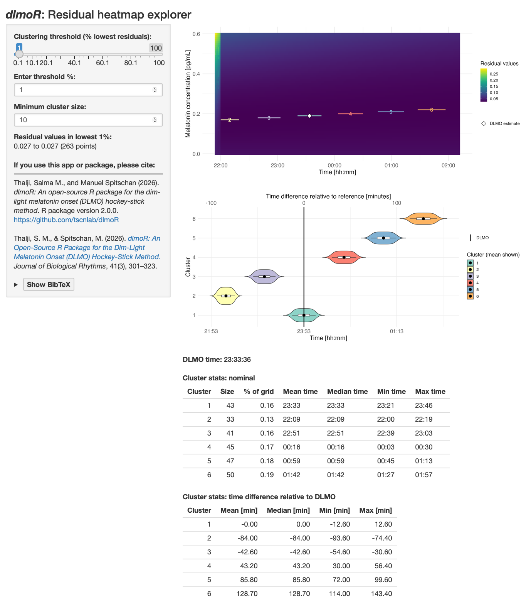
The selected cluster is centered on the DLMO estimate, with a time range of about -12.6 to +12.6 minutes relative to the selected DLMO. However, other clusters with nearly identical residuals occur approximately 42.6 minutes earlier, 84.0 minutes earlier, 43.2 minutes later, 85.8 minutes later, and 128.7 minutes later. This pattern means the chosen estimate is one of several similarly good solutions. The diagnostic profile plot and the analysis settings should be reviewed carefully before treating the selected time as uniquely determined.
One broad low-residual region
Profile E shows a different pattern. The selected DLMO is 20:55:36. With the explorer set to the lowest 5% of residuals, the residual values shown are 0.278 to 0.278 across 572 grid points. Again, at the printed precision, many grid points fit essentially equally well.
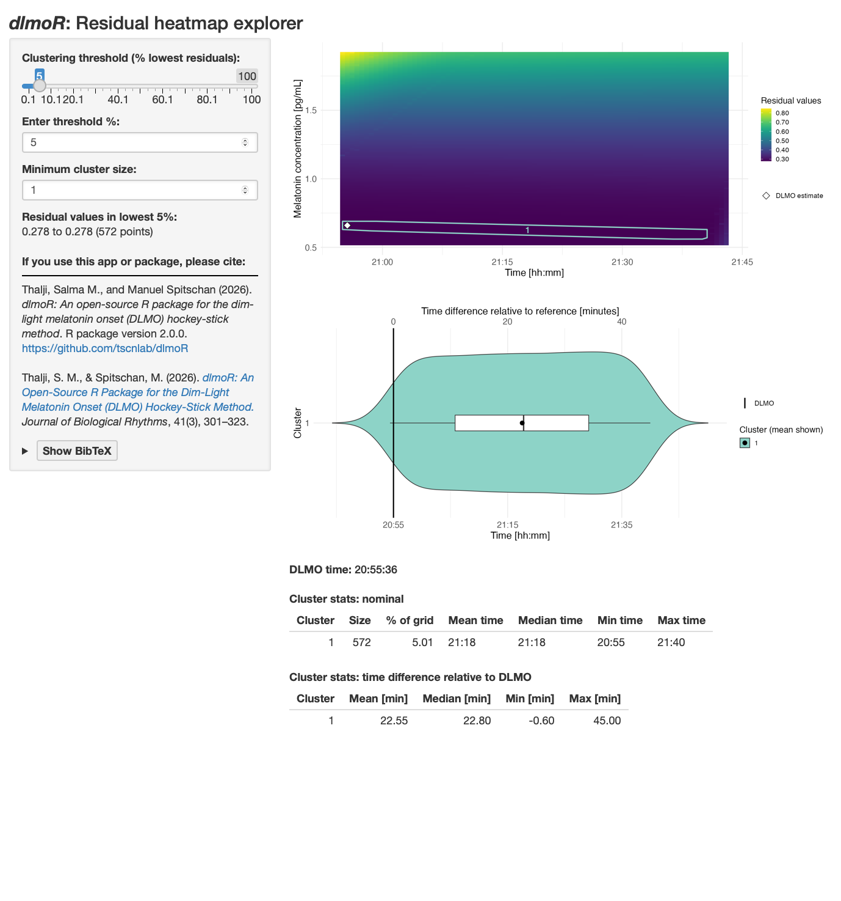
Unlike profile D, the low-residual solutions form one broad cluster rather than several separated clusters. The cluster spans from about 0.6 minutes before the selected DLMO to about 45.0 minutes after it, with a mean offset of 22.55 minutes. This suggests a broad continuous region of similarly good solutions, rather than disjoint jumps between separate candidate DLMO regions. In practice, that means the estimate is plausible, but the uncertainty window is broad. In this example, that broad window is likely exacerbated by sparse melatonin sampling across the relevant part of the rise, with no samples between roughly 22:00 and 02:00.
In practice, the residual explorer is most useful as a sensitivity check after you have already looked at the diagnostic profile plot. The profile plot tells you what the algorithm selected; the residual explorer tells you whether nearby or competing solutions fit almost as well.
Batch workflows
Because calculate_dlmo() returns ordinary R objects, dlmoR fits naturally into scripted workflows. You can wrap the function in a small batch script to process many melatonin profiles, save the full result objects for later inspection, export diagnostic plots, and write a compact summary table with one row per input file. The same idea works whether you iterate over file paths or over data frames that have already been read into R.
The code below shows one example file-based workflow:
files <- list.files("path/to/profiles", pattern = "\\.csv$", full.names = TRUE)
output_dir <- "dlmo_batch_output"
plot_dir <- file.path(output_dir, "plots")
object_dir <- file.path(output_dir, "objects")
dir.create(plot_dir, recursive = TRUE, showWarnings = FALSE)
dir.create(object_dir, recursive = TRUE, showWarnings = FALSE)
dlmo_results <- lapply(files, function(file_path) {
profile_name <- tools::file_path_sans_ext(basename(file_path))
result <- calculate_dlmo(
file_path = file_path,
threshold = 5
)
ggplot2::ggsave(
filename = file.path(plot_dir, paste0(profile_name, "_coarse.png")),
plot = result$dlmoplotcoarse,
width = 8,
height = 5,
dpi = 300
)
ggplot2::ggsave(
filename = file.path(plot_dir, paste0(profile_name, "_fine.png")),
plot = result$dlmoplotfine,
width = 8,
height = 5,
dpi = 300
)
saveRDS(
result,
file = file.path(object_dir, paste0(profile_name, "_dlmo_result.rds"))
)
result
})
names(dlmo_results) <- tools::file_path_sans_ext(basename(files))
summary_table <- data.frame(
file_name = basename(files),
profile_name = names(dlmo_results),
threshold = vapply(dlmo_results, function(x) x$threshold, numeric(1)),
interval_limit = vapply(dlmo_results, function(x) as.character(x$interval_limit), character(1)),
dlmo_coarse = vapply(dlmo_results, function(x) as.character(x$dlmo$coarse$time), character(1)),
dlmo_fine = vapply(dlmo_results, function(x) as.character(x$dlmo$fine$time), character(1))
)
writexl::write_xlsx(
summary_table,
path = file.path(output_dir, "dlmo_summary.xlsx")
)
saveRDS(
dlmo_results,
file = file.path(output_dir, "dlmo_results_all_profiles.rds")
)